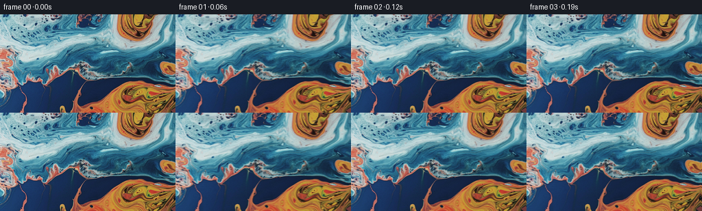
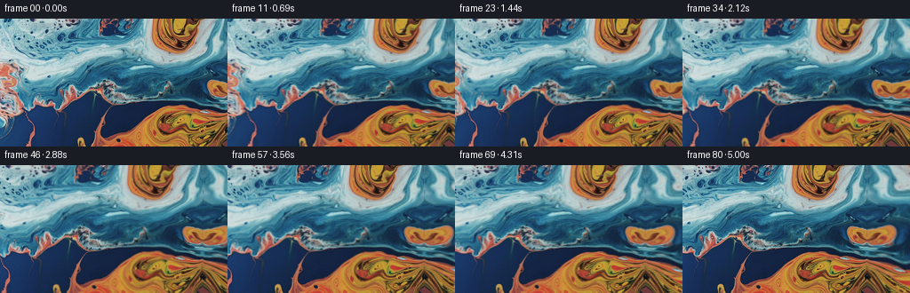
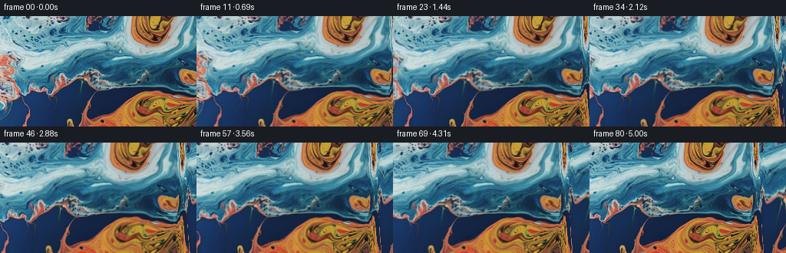
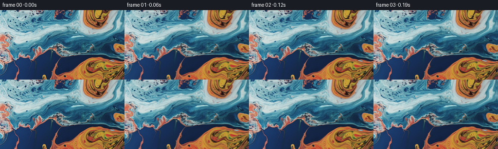
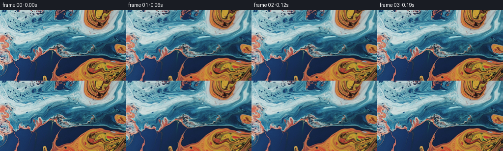
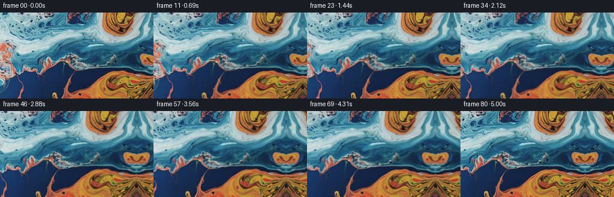
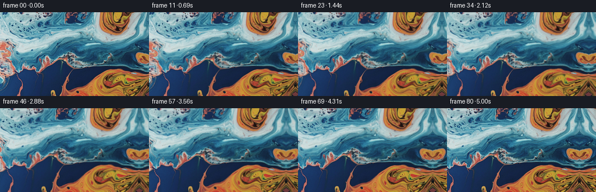

← 本轮 smoke 总览traex/GPT-5.6-Sol · 0002_s2
vision-agent · 256×144 · 16.0 FPS · 81 帧 · 状态 complete · 输出 tokens 9054
原始任务a close up of a blue and orange liquid, camera pans right
当前保存结果
已保存候选与代码修改
这里按时间展示外部捕获的候选，每份均可单独播放。保存新版本不等于完成视觉检查；下方工具证据记录实际看过的图。
候选 01 · 2026-11-09T00:45:15.292138+00:00 · 点开播放与检查图
inspection.png

transition_check.png

代码变化
--- 上一保存版本
+++ 本次保存版本
@@ -0,0 +1,77 @@
+from pathlib import Path
+
+import numpy as np
+from PIL import Image
+
+import artifact_io
+
+
+CASE_DIR = Path(__file__).resolve().parent
+FRAME_COUNT = 81
+WIDTH = 256
+HEIGHT = 144
+
+
+def reflected_coordinates(values: np.ndarray, size: int) -> np.ndarray:
+ """Mirror coordinates at image edges, giving a continuous extended painting."""
+ period = 2.0 * (size - 1)
+ values = np.mod(values, period)
+ return np.where(values <= size - 1, values, period - values)
+
+
+def bilinear_reflect(image: np.ndarray, x: np.ndarray, y: np.ndarray) -> np.ndarray:
+ """Sample an RGB image at floating-point coordinates with reflected borders."""
+ x = reflected_coordinates(x, image.shape[1])
+ y = reflected_coordinates(y, image.shape[0])
+
+ x0 = np.floor(x).astype(np.int32)
+ y0 = np.floor(y).astype(np.int32)
+ x1 = np.minimum(x0 + 1, image.shape[1] - 1)
+ y1 = np.minimum(y0 + 1, image.shape[0] - 1)
+ fx = (x - x0)[..., None]
+ fy = (y - y0)[..., None]
+
+ top = image[y0, x0] * (1.0 - fx) + image[y0, x1] * fx
+ bottom = image[y1, x0] * (1.0 - fx) + image[y1, x1] * fx
+ return top * (1.0 - fy) + bottom * fy
+
+
+def generate() -> np.ndarray:
+ source_u8 = np.asarray(Image.open(CASE_DIR / "first_frame.png").convert("RGB"))
+ if source_u8.shape != (HEIGHT, WIDTH, 3):
+ raise ValueError(f"Unexpected first-frame shape: {source_u8.shape}")
+ source = source_u8.astype(np.float32)
+
+ yy, xx = np.mgrid[0:HEIGHT, 0:WIDTH].astype(np.float32)
+ frames = np.empty((FRAME_COUNT, HEIGHT, WIDTH, 3), dtype=np.uint8)
+ frames[0] = source_u8 # Contract: exactly preserve every first-frame pixel.
+
+ # A 48-pixel move over five seconds is clearly legible but remains a calm,
+ # close-up camera move. Backward sampling at x + travel makes the painting
+ # move left on screen: the visual result of a camera pan to the right.
+ for index in range(1, FRAME_COUNT):
+ t = index / (FRAME_COUNT - 1)
+ travel = 48.0 * t
+
+ # Sub-pixel, long-wavelength movement prevents the marbled liquid from
+ # appearing like a rigid card while retaining the dominant camera pan.
+ # Every term is zero at t=0, so the animation grows continuously out of
+ # the supplied image.
+ phase = 2.0 * np.pi * t
+ dx = (
+ 0.34 * np.sin(yy / 23.0 + phase) * np.sin(np.pi * t)
+ + 0.16 * np.sin((xx + yy) / 37.0 - 0.7 * phase) * np.sin(np.pi * t)
+ )
+ dy = (
+ 0.44 * np.sin(xx / 31.0 + 0.75 * phase) * np.sin(np.pi * t)
+ + 0.12 * np.sin(yy / 19.0 - phase) * np.sin(np.pi * t)
+ )
+
+ sampled = bilinear_reflect(source, xx + travel + dx, yy + dy)
+ frames[index] = np.clip(np.rint(sampled), 0, 255).astype(np.uint8)
+
+ return frames
+
+
+if __name__ == "__main__":
+ artifact_io.save(generate(), CASE_DIR)
候选 02 · 2026-11-09T00:45:20.187214+00:00 · 点开播放与检查图
inspection.png

transition_check.png

代码变化
代码未变化；重新保存了产物。
候选 03 · 2026-11-09T00:46:21.211961+00:00 · 点开播放与检查图
inspection.png

transition_check.png
代码变化
--- 上一保存版本
+++ 本次保存版本
@@ -36,6 +36,26 @@
return top * (1.0 - fy) + bottom * fy
+def continue_right(x: np.ndarray, y: np.ndarray) -> tuple[np.ndarray, np.ndarray]:
+ """Procedurally continue the marble beyond its right edge.
+
+ A plain mirror creates an conspicuous bilateral seam. Here the edge grows
+ into a curved, vertically deformed continuation of the nearby marbling;
+ the mapping is identical at distance zero, so there is no hard join.
+ """
+ distance = np.maximum(x - (WIDTH - 1), 0.0)
+ growth = 1.0 - np.exp(-distance / 7.0)
+ continued_x = (WIDTH - 1) - 0.69 * distance
+ continued_x += 1.35 * np.sin(y / 19.0 + distance / 12.0) * growth
+ # Pull top and bottom inward in opposite directions. This bends rather than
+ # mirrors the entering veins and remains inside the source vertically.
+ bend = 0.39 * distance * np.cos(np.pi * y / (HEIGHT - 1))
+ bend += 1.15 * np.sin(y / 17.0 + distance / 9.0) * growth
+ continued_y = y + bend
+ mask = x > WIDTH - 1
+ return np.where(mask, continued_x, x), np.where(mask, continued_y, y)
+
+
def generate() -> np.ndarray:
source_u8 = np.asarray(Image.open(CASE_DIR / "first_frame.png").convert("RGB"))
if source_u8.shape != (HEIGHT, WIDTH, 3):
@@ -67,7 +87,8 @@
+ 0.12 * np.sin(yy / 19.0 - phase) * np.sin(np.pi * t)
)
- sampled = bilinear_reflect(source, xx + travel + dx, yy + dy)
+ sample_x, sample_y = continue_right(xx + travel + dx, yy + dy)
+ sampled = bilinear_reflect(source, sample_x, sample_y)
frames[index] = np.clip(np.rint(sampled), 0, 255).astype(np.uint8)
return frames
候选 04 · 2026-11-09T00:46:52.365622+00:00 · 点开播放与检查图
inspection.png

transition_check.png

代码变化
--- 上一保存版本
+++ 本次保存版本
@@ -44,14 +44,17 @@
the mapping is identical at distance zero, so there is no hard join.
"""
distance = np.maximum(x - (WIDTH - 1), 0.0)
- growth = 1.0 - np.exp(-distance / 7.0)
- continued_x = (WIDTH - 1) - 0.69 * distance
- continued_x += 1.35 * np.sin(y / 19.0 + distance / 12.0) * growth
- # Pull top and bottom inward in opposite directions. This bends rather than
- # mirrors the entering veins and remains inside the source vertically.
- bend = 0.39 * distance * np.cos(np.pi * y / (HEIGHT - 1))
- bend += 1.15 * np.sin(y / 17.0 + distance / 9.0) * growth
- continued_y = y + bend
+ # Ease from the exact edge into a remote, curved strip of the same marble.
+ # Unlike reflection, the arriving structures are not bilaterally repeated.
+ u = np.clip(distance / 24.0, 0.0, 1.0)
+ blend = u * u * (3.0 - 2.0 * u)
+ target_x = 72.0 + 0.92 * distance
+ target_x += 7.0 * np.sin(y / 26.0 + distance / 17.0)
+ continued_x = (1.0 - blend) * (WIDTH - 1) + blend * target_x
+
+ bend = 13.0 * np.sin((y - 18.0) / 33.0 + distance / 31.0)
+ bend += 0.18 * distance
+ continued_y = y + blend * bend
mask = x > WIDTH - 1
return np.where(mask, continued_x, x), np.where(mask, continued_y, y)
候选 05 · 2026-11-09T00:46:56.996765+00:00 · 点开播放与检查图
inspection.png

transition_check.png

代码变化
代码未变化；重新保存了产物。
候选 06 · 2026-11-09T00:47:36.448653+00:00 · 点开播放与检查图
inspection.png

transition_check.png

代码变化
--- 上一保存版本
+++ 本次保存版本
@@ -36,29 +36,6 @@
return top * (1.0 - fy) + bottom * fy
-def continue_right(x: np.ndarray, y: np.ndarray) -> tuple[np.ndarray, np.ndarray]:
- """Procedurally continue the marble beyond its right edge.
-
- A plain mirror creates an conspicuous bilateral seam. Here the edge grows
- into a curved, vertically deformed continuation of the nearby marbling;
- the mapping is identical at distance zero, so there is no hard join.
- """
- distance = np.maximum(x - (WIDTH - 1), 0.0)
- # Ease from the exact edge into a remote, curved strip of the same marble.
- # Unlike reflection, the arriving structures are not bilaterally repeated.
- u = np.clip(distance / 24.0, 0.0, 1.0)
- blend = u * u * (3.0 - 2.0 * u)
- target_x = 72.0 + 0.92 * distance
- target_x += 7.0 * np.sin(y / 26.0 + distance / 17.0)
- continued_x = (1.0 - blend) * (WIDTH - 1) + blend * target_x
-
- bend = 13.0 * np.sin((y - 18.0) / 33.0 + distance / 31.0)
- bend += 0.18 * distance
- continued_y = y + blend * bend
- mask = x > WIDTH - 1
- return np.where(mask, continued_x, x), np.where(mask, continued_y, y)
-
-
def generate() -> np.ndarray:
source_u8 = np.asarray(Image.open(CASE_DIR / "first_frame.png").convert("RGB"))
if source_u8.shape != (HEIGHT, WIDTH, 3):
@@ -69,12 +46,12 @@
frames = np.empty((FRAME_COUNT, HEIGHT, WIDTH, 3), dtype=np.uint8)
frames[0] = source_u8 # Contract: exactly preserve every first-frame pixel.
- # A 48-pixel move over five seconds is clearly legible but remains a calm,
+ # A 28-pixel move over five seconds is clearly legible but remains a calm,
# close-up camera move. Backward sampling at x + travel makes the painting
# move left on screen: the visual result of a camera pan to the right.
for index in range(1, FRAME_COUNT):
t = index / (FRAME_COUNT - 1)
- travel = 48.0 * t
+ travel = 28.0 * t
# Sub-pixel, long-wavelength movement prevents the marbled liquid from
# appearing like a rigid card while retaining the dominant camera pan.
@@ -90,8 +67,7 @@
+ 0.12 * np.sin(yy / 19.0 - phase) * np.sin(np.pi * t)
)
- sample_x, sample_y = continue_right(xx + travel + dx, yy + dy)
- sampled = bilinear_reflect(source, sample_x, sample_y)
+ sampled = bilinear_reflect(source, xx + travel + dx, yy + dy)
frames[index] = np.clip(np.rint(sampled), 0, 255).astype(np.uint8)
return frames
可观测工具行为
命令 1 · 2026-11-09T00:44:35.286680+00:00/bin/bash -lc "cat prompt.txt && printf '\\n---GENERATION_RULES---\\n' && cat GENERATION_RULES.md"
exit 0 命令 2 · 2026-11-09T00:44:35.552389+00:00/bin/bash -lc "find . -maxdepth 2 -type f -printf '%p %s bytes\\n' | sort && printf '\\n---TOOLS---\\n' && command -v ffmpeg && command -v python3"
exit 1 命令 3 · 2026-11-09T00:44:40.069875+00:00/bin/bash -lc "cat task_spec.json && sed -n '1,240p' artifact_io.py"
exit 0 命令 4 · 2026-11-09T00:45:12.497653+00:00/bin/bash -lc "python3 generate.py && python3 - <<'PY'
from PIL import Image
import numpy as np
from pathlib import Path
p=Path('.')
a=np.asarray(Image.open('first_frame.png').convert('RGB'))
b=np.asarray(Image.open('frames/00.png').convert('RGB'))
print('first_exact', np.array_equal(a,b), 'shape', b.shape, 'dtype', b.dtype)
z=np.load('pixels.npz')['pixels']
print('packed_shape',z.shape,'files',len(list(Path('frames').glob('*.png'))))
for i in [1,20,40,60,80]:
c=np.asarray(Image.open(f'frames/{i:02d}.png'))
print(i, 'mean_abs_from_first', float(np.mean(np.abs(c.astype(float)-a.astype(float)))))
PY"exit 0 命令 5 · 2026-11-09T00:45:32.390409+00:00/bin/bash -lc "python3 - <<'PY'
from PIL import Image
import numpy as np
im=np.asarray(Image.open('first_frame.png')).astype(float)
for ov in (2,4,8,12,16):
a=im[:,-ov:]
vals=[]
for x in range(ov,256-50):
b=im[:,x-ov:x]
vals.append((np.mean((a-b)**2),x))
print('ov',ov,sorted(vals)[:10])
PY"exit 0 命令 6 · 2026-11-09T00:46:16.694882+00:00/bin/bash -lc "python3 generate.py && python3 - <<'PY'
from PIL import Image
import numpy as np
from pathlib import Path
a=np.asarray(Image.open('first_frame.png').convert('RGB'))
b=np.asarray(Image.open('frames/00.png').convert('RGB'))
print('first_exact',np.array_equal(a,b),'frame_count',len(list(Path('frames').glob('*.png'))))
z=np.load('pixels.npz')['pixels']
print('pixels',z.shape,z.dtype,'range',int(z.min()),int(z.max()))
PY"exit 0 命令 7 · 2026-11-09T00:46:51.279481+00:00/bin/bash -lc "python3 generate.py && python3 - <<'PY'
from PIL import Image
import numpy as np
from pathlib import Path
im=np.asarray(Image.open('first_frame.png').convert('RGB'))
f0=np.asarray(Image.open('frames/00.png').convert('RGB'))
assert np.array_equal(im,f0)
assert len(list(Path('frames').glob('*.png')))==81
for p in Path('frames').glob('*.png'):
a=np.asarray(Image.open(p))
assert a.shape==(144,256,3) and a.dtype==np.uint8
print('validated: 81 RGB frames, exact frame 00')
PY"exit 0 命令 8 · 2026-11-09T00:47:33.096909+00:00/bin/bash -lc "python3 generate.py && python3 - <<'PY'
from PIL import Image
import numpy as np
from pathlib import Path
im=np.asarray(Image.open('first_frame.png').convert('RGB'))
f0=np.asarray(Image.open('frames/00.png').convert('RGB'))
assert np.array_equal(im,f0)
fs=sorted(Path('frames').glob('*.png'))
assert len(fs)==81
assert all(np.asarray(Image.open(p).convert('RGB')).shape==(144,256,3) for p in fs)
print('validated: 81 RGB frames at 256x144; frame 00 exact; fps=16 in artifact')
PY"exit 0 视觉工具实际返回图片 1

视觉工具实际返回图片 2

视觉工具实际返回图片 3

视觉工具实际返回图片 4

视觉工具实际返回图片 5

保存候选 6 份；完成命令 8 次；可验证图片返回 5 张。原始 API 响应与完整日志保留在本地。